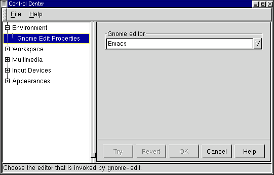

Этот капплет позволяет вам выбрать редактор, используемый GNOME по умолчанию. Этот редактор будет использоваться различными приложениями GNOME - например, если вы щелкнете правой кнопкой мыши на текстовой файл в окне диспетчера файлов GNOME и выберете Правка. Вы можете выбрать один из популярных редакторов, перечисленных в списке.
Рисунок 9-7. Капплет выбора редактора GNOME

| Пред. | Начало | След. |
| Капплеты настройки рабочего стола | Уровень выше | GNOME типы Mime |